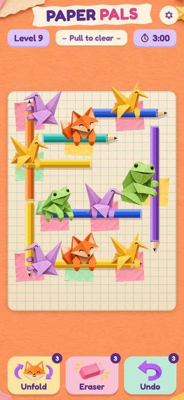
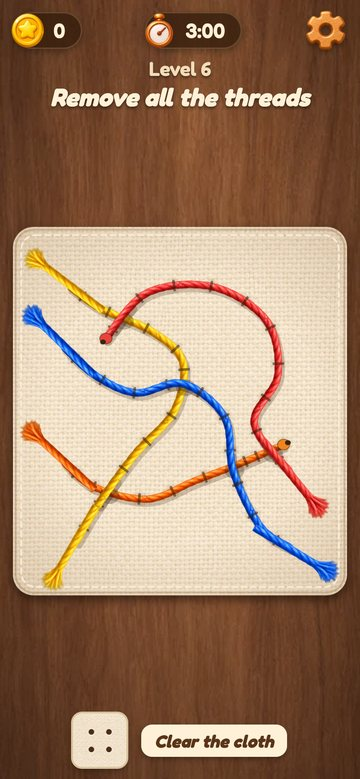
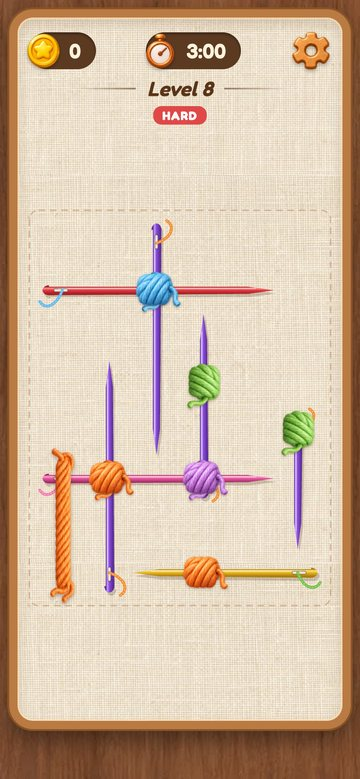

WODH · playtest · November 2026
Three pull-puzzle prototypes
Each one opens in the browser. They play best on a phone: drag a piece to pull it out. Sound starts after your first tap.

Paper Pals
Slide pencils out along their line. When a pencil leaves its origami pal, the pal unfolds and flutters away.
Play Paper Pals
Thread Pull
Pull a loose end and the cord unpicks hole by hole. A cord trapped under another stops at the crossing.
Play Thread Pull
Needle and Yarn
Pull a needle free and the yarn knot it held is stitched flat onto the fabric. Ropes are sewn down with their last needle.
Play Needle and Yarn